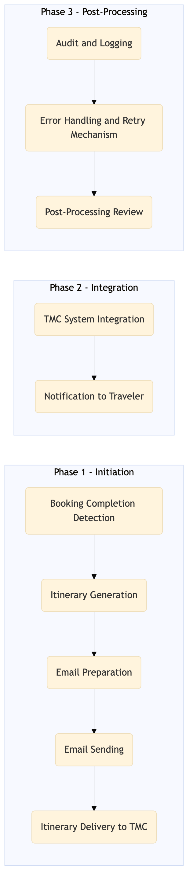

This process document outlines the steps involved in sending a booking confirmation email and delivering an itinerary to the traveler.
| Trigger | A successful booking is made through one of the OTA systems (Expedia Open World, Partner Central, Amadeus NDC, Sabre GDS, Travelport, EVC, One Key, TravelAds). |
| Outcome | The traveler receives a confirmation email with their itinerary details and any necessary travel documents. |
| Systems | Expedia Open World Partner Central Amadeus NDC Sabre GDS Travelport EVC One Key TravelAds SAP Concur T2 SAP Concur Expense Amex GBT Neo/Complete International SOS Cvent Amex Corporate Card VCN |

Click to enlarge
| Step | Name & Pain Point | Role | System | Input | Output | KPI | Flags |
|---|---|---|---|---|---|---|---|
| 1.1 | Booking Completion Detection Handling edge cases where bookings might not be fully processed | OTA System | Expedia Open World, Partner Central, Amadeus NDC, Sabre GDS, Travelport, EVC, One Key, TravelAds | Booking details | Confirmation of booking completion | 95% accuracy in detecting booking completions within 1 minute | ⚠ Exception |
| 1.2 | Itinerary Generation Ensuring all travel segments are correctly included | OTA System | Expedia Open World, Partner Central, Amadeus NDC, Sabre GDS, Travelport, EVC, One Key, TravelAds | Booking confirmation details | Generated itinerary in PDF format | 90% accuracy in generating correct itineraries within 2 minutes | ⚠ Exception |
| 1.3 | Email Preparation Handling large attachments and ensuring email deliverability | OTA System | Expedia Open World, Partner Central, Amadeus NDC, Sabre GDS, Travelport, EVC, One Key, TravelAds | Itinerary PDF and traveler details | Prepared email with itinerary attachment | 98% success rate in preparing emails within 1 minute | ⚠ Exception |
| 1.4 | Email Sending Dealing with temporary email server outages | OTA System | Expedia Open World, Partner Central, Amadeus NDC, Sabre GDS, Travelport, EVC, One Key, TravelAds | Prepared email | Confirmation of email sent | 95% success rate in sending emails within 10 seconds | ⚠ Exception |
| 1.5 | Itinerary Delivery to TMC Ensuring secure and reliable data transfer | OTA System | Expedia Open World, Partner Central, Amadeus NDC, Sabre GDS, Travelport, EVC, One Key, TravelAds | Itinerary PDF and traveler details | Confirmation of itinerary delivered to TMC system | 90% success rate in delivering itineraries within 2 minutes | ⚠ Exception |
| 1.6 | TMC System Integration Handling different data formats and ensuring seamless integration | TMC System | SAP Concur T2, SAP Concur Expense, Amex GBT Neo/Complete, Amadeus GDS, SAP S/4HANA, International SOS, Cvent, Amex Corporate Card, VCN, SAP Analytics Cloud, Workday | Itinerary PDF and traveler details | Confirmation of itinerary received and processed | 95% success rate in processing itineraries within 1 minute | ⚠ Exception |
| 1.7 | Notification to Traveler Handling different notification channels (email, SMS, app push) | TMC System | SAP Concur T2, SAP Concur Expense, Amex GBT Neo/Complete, Amadeus GDS, SAP S/4HANA, International SOS, Cvent, Amex Corporate Card, VCN, SAP Analytics Cloud, Workday | Processed itinerary details | Notification sent to traveler | 90% success rate in sending notifications within 1 minute | ⚠ Exception |
| 1.8 | Audit and Logging Ensuring compliance with data protection regulations | OTA System | Expedia Open World, Partner Central, Amadeus NDC, Sabre GDS, Travelport, EVC, One Key, TravelAds | All transaction details | Audit logs | 100% accuracy in logging all transactions | ⚠ Exception |
| 1.9 | Error Handling and Retry Mechanism Identifying and resolving transient errors | OTA System | Expedia Open World, Partner Central, Amadeus NDC, Sabre GDS, Travelport, EVC, One Key, TravelAds | Error logs | Retried transactions or manual intervention required | 95% success rate in retrying failed transactions within 1 hour | ◆ Decision⚠ Exception |
| 1.10 | Post-Processing Review Handling large volumes of data for review | OTA System | Expedia Open World, Partner Central, Amadeus NDC, Sabre GDS, Travelport, EVC, One Key, TravelAds | Audit logs and error logs | Review report | 100% completion of post-processing reviews within 24 hours | ⚠ Exception |